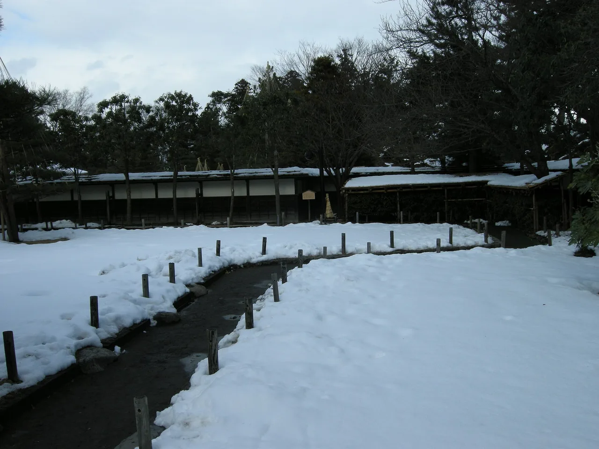

Fukushima Travel Guide for Japanese Learners
Samurai history, hot springs, and fruit orchards in a large, scenic prefecture.

Fukushima offers the well-preserved samurai town of Aizu-Wakamatsu, thatched post-town villages, and excellent peaches and sake. The Aizu region is especially rich in history.
History & background
Fukushima's (福島) Aizu (会津) region was a loyal samurai stronghold; the Byakkotai (白虎隊) young warriors and Tsuruga Castle (鶴ヶ城) are central to its Boshin War history.
What to see
- Tsuruga Castle in Aizu-Wakamatsu
- Ouchi-juku — thatched-roof post town
- Goshiki-numa volcanic lakes
- Spa Resort Hawaiians
Hidden gems
- Onomichi Nakasendo Path — Walk the historic mountain trail connecting post towns with original stone markers and forest views near Aizu.
- Kitashiobara Village pottery studios — Visit working ceramic workshops in this quiet highland village famous for rustic earthenware traditions.
- Inunaki Pass scenic route — Drive or cycle through dramatic mountain gorges with seasonal wildflowers and few tourists compared to major attractions.
Some links above are affiliate links. We may earn a commission at no extra cost to you. We only list services we'd use ourselves.
What to eat
Kitakata ramen and local sake are regional stars.
Getting there & when to go
Getting there: Kōriyama/Fukushima are ~1h20m–1h40m from Tokyo by Tōhoku Shinkansen.
Best time: Summer for peaches; autumn for foliage around the Aizu lakes.
When to go — season by season
Summer is peach season; autumn turns the Bandai (磐梯) highlands and Goshiki-numa (五色沼) lakes vivid. Winter is for Aizu's sake and snow, and spring is gentle and blossom-filled.
Local culture
Aizu woodworking (Aizu-nuri) is a 400-year craft tradition where artisans hand-paint intricate patterns onto tableware and furniture using natural lacquer. You'll see distinctive red and black bowls in local shops—each takes weeks to complete and remains a point of regional pride.
Winter in Fukushima brings miso and sake production season. Rural breweries (kura) open for tours October–March, and visitors can observe koji mold cultivation and fermentation in wooden vats, an ancient process unchanged for generations.
A suggested visit
Base in Aizu-Wakamatsu (会津若松) for the castle and samurai sites, then ride the scenic line to the thatched post town of Ouchi-juku (大内宿) for negi-soba eaten with a leek.
Seasonal tip: Winter snow (December–February) can block mountain passes and village roads; check weather before visiting Ouchi-juku or Kitashiobara, though this season offers quieter exploration and hot-spring visits.
Local etiquette: At Tsuruga Castle and other samurai heritage sites, speak quietly and avoid touching reconstructed wooden structures or displays—these are treated as living cultural monuments rather than casual photo backdrops.
At Ouchi-juku, try the negi-soba — eaten using a whole leek as a 'chopstick'.
Some links above are affiliate links. We may earn a commission at no extra cost to you. We only list services we'd use ourselves.
Common questions
Q. How long does it take to reach Fukushima from Tokyo?
A. The Tōhoku Shinkansen takes about 1 hour 20 minutes to Kōriyama or 1 hour 40 minutes to Fukushima station. Arriving early gives you time to explore both samurai history and hot springs in one day.
Q. What's the best time to visit Fukushima?
A. Summer for peaches, autumn for foliage around Aizu lakes. Visit in autumn if you want to photograph both colorful trees and historical sites like Tsuruga Castle together without summer crowds.
Q. What should I eat in Fukushima?
A. Kitakata ramen and local sake are regional specialties. Pair them at dinner—the sake's acidity cuts the rich broth perfectly, a pairing locals have perfected for generations.